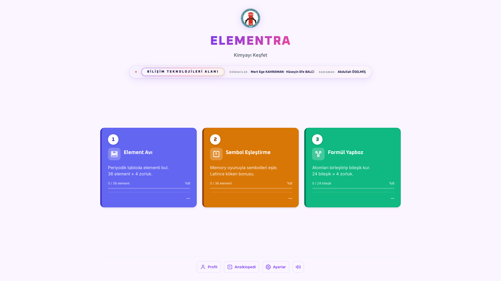
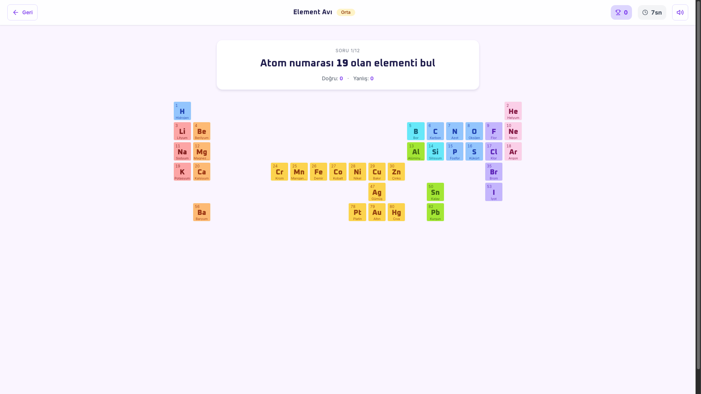
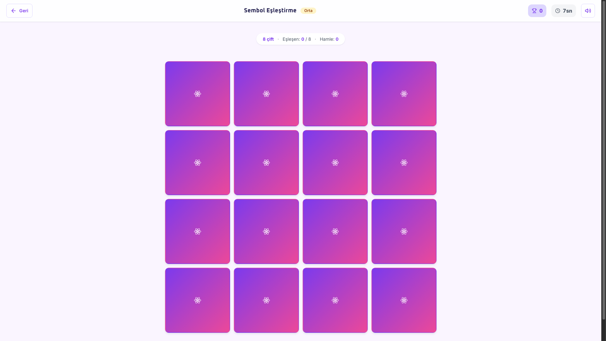
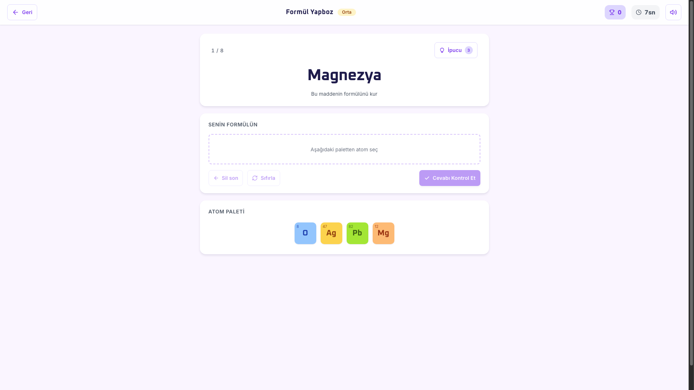

ELEMENTRA
Kimyayı Keşfet
Lise 9. sınıf kimya için 3 modüllü dijital öğretici oyun · Oyun temelli öğrenme ile kalıcı bilgi
Kimya
Ezberle Öğrenilmiyor.
Periyodik tablo, atom sembolleri, kimyasal formüller — geleneksel yöntemlerle ezberlenince kısa sürede unutuluyor. Öğrenciler motivasyonunu kaybediyor, ders soyut kalıyor.
ELEMENTRA
Oyun Temelli Öğrenme
3 modül × 4 zorluk = 12 farklı oyun deneyimi. 36 element + 24 bileşik. Tarayıcıda anında çalışır — indirme gerekmez. Klavye + dokunmatik + her cihaz.
Oyun Ana Ekran

Tarayıcıda anında çalışır · 3 modül kartı seç → oyna
Üç Farklı Pedagojik Yöntem
Element Avı
Periyodik tabloda 36 elementi tıkla-bul. 4 farklı soru tipi.
Sembol Eşleştirme
Memory mekaniğiyle ad ↔ sembol. Latince köken bonusu.
Formül Yapboz
Atomları birleştir, 24 bileşik kur. Pedagojik geri bildirim.
Element Avı

36 Element Veritabanı
Hidrojen'den Kurşun'a tam liste
4 Soru Tipi
Ad · Atom no · Yaygın ad · Kategori
4 Zorluk Seviyesi
Kolay (60sn) → Uzman (10sn/soru)
Rozet Sistemi
İlk Adım · Periyot Ustası · Mükemmellik
Sembol Eşleştirme

Memory Mekaniği
Klasik kart çevirme oyunuyla eşle
Latince Köken Bonusu
Na = Natrium · K = Kalium · Fe = Ferrum
6'dan 24 Çifte
Kolay: 6 çift · Uzman: 24 çift
Combo Sistemi
Üst üste doğru eşleşmelerde bonus
Formül Yapboz

24 Bileşik
H₂O · CO₂ · NaCl · H₂SO₄ · NaOH...
Atom Paletinden Seç
Doğru element + doğru oran
Pedagojik Geri Bildirim
"Eksik 2 H atomu var" / "Fazla O"
Bağlam Kartı
Her bileşik için kullanım alanı + örnek
4 Seviye · Kademeli
Yetkinlik Gelişimi
Süre yok
Soft süre
Süre baskısı
Yanıltıcı tuzak
Oyun Temelli Öğrenme
Klasik Ezberden Çok Üstün
(Hu, 2022)
(Snakeleev Project)
Spaced repetition + anında geri bildirim + yetkinlik-tabanlı ilerleme ilkeleri üzerine kurulu.
Yansıtma Anı &
20 Başarım Sistemi
Yansıtma Kartı
Oyun sonu en sık karıştırılan elementler
Yıldız Matrisi
3 modül × 4 zorluk = 12 hücreli profil
20 Rozet
İlk Adım, Hızlı Kimyacı, Doğa Dostu...
Mini Ansiklopedi
36 element + 24 bileşik referans kartları
9. Sınıf Kimya
Müfredat Uyumlu
| 9.2.3.3 | Periyodik tablonun yapısı |
| 9.2.3.4 | Element kategorileri |
| 9.3.2.1 | Bileşik adlandırma |
| 9.3.2.2 | Kimyasal formül yazımı |
Bilişim Teknolojileri Alanı
Şehit Ziya İlhan Dağdaş MTAL · Muğla
KAHRAMAN
BALCI
ÖSELMİŞ
Sergi Sonrası
Evde de Devam Et

Telefonunda Oyna
Tarayıcıda anında çalışır
İndirme gerekmez · Klavye + dokunmatik
Tüm modern tarayıcılar